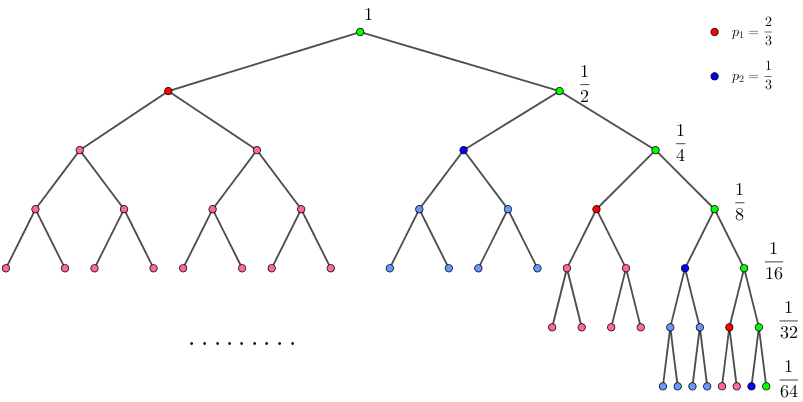

从前有一个随机数生成器，能够生成一个 $[1, n]$ 内的整数，且生成 $i$ 的权重是 $a_i$ (即生成 $1 \cdots n$ 的概率比是 $a_1 : a_2 : \cdots : a_n$)。
现在它已经找不到了，而你想模拟这个生成的过程，但是你手里只有一枚均匀的硬币。你想了很久，设计了一个方案并开始扔硬币。
可是你扔了很多很多次硬币，却发现你还是没有模拟成功——或许这个方案实在太慢了，甚至有可能永远不会结束。
于是你希望找到一个期望扔硬币次数最少的模拟方案，但是这个方案讲起来可能比较复杂，你想先知道这个最少的期望扔硬币次数。
第一行包含一个正整数 $n$ ($n \leq 10^6$)。
第二行包含 $n$ 个空格隔开的正整数，其中第 $i$ 个数是 $a_i$ ($a_i \leq 10^7$)。
输出一行一个整数，表示答案 (期望次数) 在模 $998244353$ 意义下的值。
记 $m = \sum a_i$，先考虑 $m$ 为 $2$ 的幂 ($2^k$) 的情况，此时第 $i$ 个数的概率为 $\dfrac {a_i} {2^k}$，易知一定存在某种方案，使得对于任一种情况都能在有限步 ($k$ 步) 内结束。
我们作出扔硬币的概率二叉树，如下图所示 (此处为 $k = 3$ 的情况)：

对于每一种方案，我们都能在二叉树上找到它对应的表示：记正面对应向左走，反面对应向右走。对每种数 $i$，如果扔硬币的序列为 $l$，我们找到它在树上对应的路径，比如走到了 $P$ 点。那么 $P$ 点以及它的子树所对应的数就应该为 $i$。
因为这里 $m$ 为 $2$ 的幂，因此每一个概率 $p$ 都能表示成 $\dfrac {a_i} {2^k}$ 的形式，因此每个 $p$ 都能拆成树上若干个节点 (对应的子树) 的并。
比如 $(a_1, a_2, a_3) = (3, 3, 2)$ 的两个例子如下：
其中第二张图中黄色节点的意义为：如果抛硬币抛出了 "正、反"，就生成数 $2$ (黄色)，而不需要抛第三次硬币了 (即子树的黄色是浅黄)。
接下来是就是算期望了，由期望的线性性质，总抛硬币次数的期望等于每种颜色的期望之和，也等于每个节点的期望之和。
比如上左图，因为每次都需要抛 $3$ 次硬币才能知道结果 (这个方案说的是如果前两次抛出 "正、正"，即使知道了答案为红色还是再抛一次)，因此期望为 $3$；而对于上右图，它的期望为
$$ 2 \times \frac 14 + 2 \times \frac 14 + 2 \times \frac 14 + 3 \times \frac 18 + 3 \times \frac 18 = \frac 94 $$
也就是，对所有节点 $v$，期望值就是下列表达式的和：$$ E(x) = \sum_v \frac {d_v} {2^{d_v}} $$ 其中 $d_v$ 为节点 $v$ 的深度。
如果记 $w_v = \dfrac 1 {2^{d_v}}$ 把它看作另一个因数 $d_v$ 的权，而权的总和 $\sum w_v$ 为 $1$，因此如果要让 $\sum\limits_v d_v w_v$ 尽可能小，那么只需让 $d_v$ 尽可能小。
因此，对于每个 $p_i$，如果将它拆成树上若干个节点的并的话，如果有多个节点位于同一深度 $d$，考虑其中两个，它的期望为 $\dfrac d {2^d} + \dfrac d {2^d} = \dfrac d {2^{d-1}}$。而如果把这两个节点换成与之等效的深度为 $d-1$ 的节点 (如果可行)，那么期望就变成了 $\dfrac {d-1} {2^{d-1}}$，确实变小了。
对于单个 $p$，容易看出将它拆成若干个两两不同的 "$2$ 的倒数幂" 之和的方案是唯一的，即为 $p$ 的二进制表示，也就是说，对于单个 $p$，将其拆成树上若干个深度两两不相同的节点的方案，也是唯一的。
那么对于所有的 $p$，每个 $p_i$ 都采取这样的方案，那么一定存在这样的一个总方案吗？(换句话说，就是这些方案是否兼容，不互斥？)
答案是肯定的，一定存在。反之，如果在第 $d$ 层互斥，因此至少有 $2^d + 1$ 个概率 (对应的方案) 包含第 $d$ 层的节点，那么它们的总和就会大于 $1$，矛盾。
既然这样的方案存在，剩下的就是计算了。我们只需将每个 $p_i$ 求出其二进制表示 $p_i = \sum\limits_j \dfrac 1 {2^{d_{ij}}}$，则答案就应该为
$$ \sum_i \sum_j \frac {d_{ij}} {2^{d_{ij}}} $$
时间复杂度 $O(n \log m)$。
接下来再来考虑 $m$ 不是 $2$ 的幂的情况。如题所说，此时可能永远不能结束，但是没关系，上面的分析还是有效的！
此时，对于一个 $p$，它会被拆成树上无穷多个节点的并！而期望就变成了一个无穷级数！(仍然是那个式子哦)
类似地，我们还是想让 $d_v$ 尽可能小，也就是说不能有多个节点位于同一深度。对于这种情况来说，$p$ 的拆分方案仍然是唯一的，甚至仍然是兼容的！(证明完全一样哦)
举个例子，比如 $(a_1, a_2) = (2, 1)$，那么概率二叉树就会如下图所示：
(注：$\dfrac 23 = 0.101010101\cdots = 0.\dot1\dot0, \dfrac 13 = 0.0101010\cdots = 0.\dot0\dot1$)
而该方案的期望就为 $\dfrac 12 + \dfrac 24 + \dfrac 38 + \dfrac 4 {16} + \dfrac 5 {32} + \cdots = 2$。(还记得题目描述中的 $\dfrac 83$ 次吗？)
这时又有一个问题，即如何计算期望值呢？
可以发现，对一个固定的有理数 $p$，它的拆点方案是确定的，因而期望也是确定的，因此我们可以定义一个函数 $E(p)$，表示生成一个概率为 $p$ 的数对期望的贡献，在上面的例子中，$E \left( \dfrac 23 \right) = \dfrac {10}9, E \left( \dfrac 13 \right) = \dfrac 89$。
在上面的例子中，有 $E \left( \dfrac 23 \right) = 2 \left( E \left( \dfrac 13 \right) - \dfrac 13 \right) \wedge E \left( \dfrac 13 \right) = 2 \left( E \left( \dfrac 23 \right) - \dfrac 23 \right)$，这是不是巧合呢？有没有一般的性质呢？
考虑有理数 $p$ ($0 < p < \dfrac 12$)，那么 $0 < 2p < 1$。设 $p$ 的二进制展开式中 $b_1, b_2, b_3, \cdots$ 位为 $1$，则 $2p$ 的二进制展开式中 $b_1 - 1, b_2 - 1, b_3 - 1, \cdots$ 位为 $1$。
因此有 $$ E(2p) = \sum_i \frac {b_i - 1} {2^{b_i - 1}} = 2 \sum_i \frac {b_i - 1} {2^{b_i}} = 2 \left( \sum_i \frac {b_i} {2^{b_i}} - \sum_i \frac 1 {2^{b_i}} \right) = 2 \left( E(p) - p \right) $$
若 $\dfrac 12 \leq p < 1$，进行类似地推理同样可以得到：
$$ E(2p - 1) = 2 \left( E(p) - p \right) $$
先考虑 $m$ 为奇数的情况。我们希望计算对所有的 $i$，$E \left( \dfrac {a_i} m \right)$ 的值。其实可以把 $E \left( \dfrac 1m \right), E \left( \dfrac 2m \right), E \left( \dfrac 3m \right), \cdots, E \left( \dfrac {m-1} m \right)$ 的所有值计算出来，然后对应相加即可。
令 $p = \dfrac 1m, \dfrac 2m, \cdots, \dfrac {m-1} m$ 代入上式，可以得到 $n$ 个互不相同的方程。把每个方程所涉及的两个变量之间连边，由基本图论容易得到这 $n$ 个点 $n$ 条边构成了一棵基环森林 (由若干棵不相交的基环树构成的图称为基环森林)，更多地，由于 $(2, m) = 1$，因此这些基环树都是单环。
因此我们可以对每一个环迭代一周后，得到一个关于 $E \left( \dfrac {x_0} m \right)$ 的一个一元一次方程，由于环的大小 $\geq 2$，因此一次项系数为 $2^n - 1 \neq 0$，故可以将 $E \left( \dfrac {x_0} m \right)$ 解出来，从而得到所有的 $E \left( \dfrac i m \right)$。
如果 $m$ 不是奇数，这也好办，由上式我们可以知道 $E \left( \dfrac i m \right) = \dfrac 12 E \left( \dfrac i {m/2} \right) + \dfrac i m$，按照 $2$ 的幂次 (ctz) 从大到小的顺序枚举即可得到所有的 $E \left( \dfrac i m \right)$。
总时间复杂度 $O(m + n)$ (除去计算逆元的复杂度)。
#include <bits/stdc++.h>
#define N 1000005
#define M 10000005
#define ctz __builtin_ctz
using namespace std;
typedef long long ll;
const ll mod = 998244353, inv2 = 499122177;
int n, m, pm, dm;
int a[N], ov[M], v[M];
ll inv, ans = 0;
ll PowerMod(ll a, int n, ll c = 1) {for (; n; n >>= 1, a = a * a % mod) if (n & 1) c = c * a % mod; return c;}
int get_odd(int x) {
int i = x, j = x * 2 % dm; ll sub, k = 1, b = 0;
do {
sub = mod - i * inv % mod;
k = k * 2 % mod; b = (b + sub) * 2 % mod;
i = j; j = j * 2 % dm;
} while (i != x);
ov[x] = PowerMod(k - 1, mod - 2, mod - b);
for (i = x, j = x * 2 % dm; j != x; i = j, j = j * 2 % dm) {
ov[j] = (ov[i] - i * inv) * 2 % mod;
ov[j] += (ov[j] < 0 ? mod : 0);
}
return ov[x];
}
int main() {
int i, j;
scanf("%d", &n);
for (m = i = 0; i < n; ++i) scanf("%d", a + i), m += a[i];
pm = ctz(m); inv = PowerMod(dm = m >> pm, mod - 2);
memset(ov, -1, sizeof ov); ov[0] = ov[dm] = 0;
if (dm != 1)
for (i = 1; i < dm; ++i)
v[i << pm] = (ov[i] == -1 ? get_odd(i) : ov[i]);
inv = PowerMod(m, mod - 2);
for (i = pm - 1; i >= 0; --i)
for (j = 1 << i; j < m; j += 1 << i + 1)
v[j] = (v[j * 2 % m] * inv2 + j * inv) % mod;
for (i = 0; i < n; ++i) ans += v[a[i]];
printf("%lld\n", ans % mod);
return 0;
}
坑1：要注意这 $n$ 个方程构成的图可能含有多个环 (不止一个环)，因此需要对每个未解决的环迭代一遍。